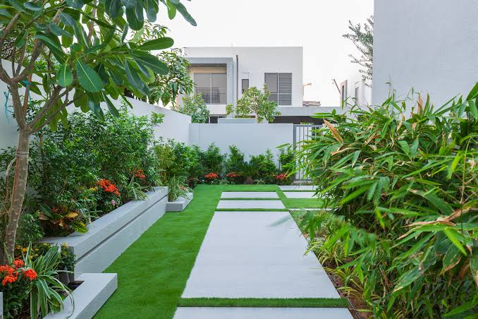
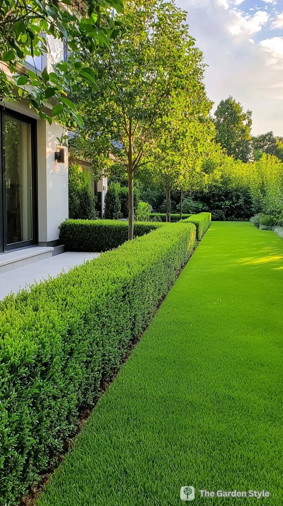
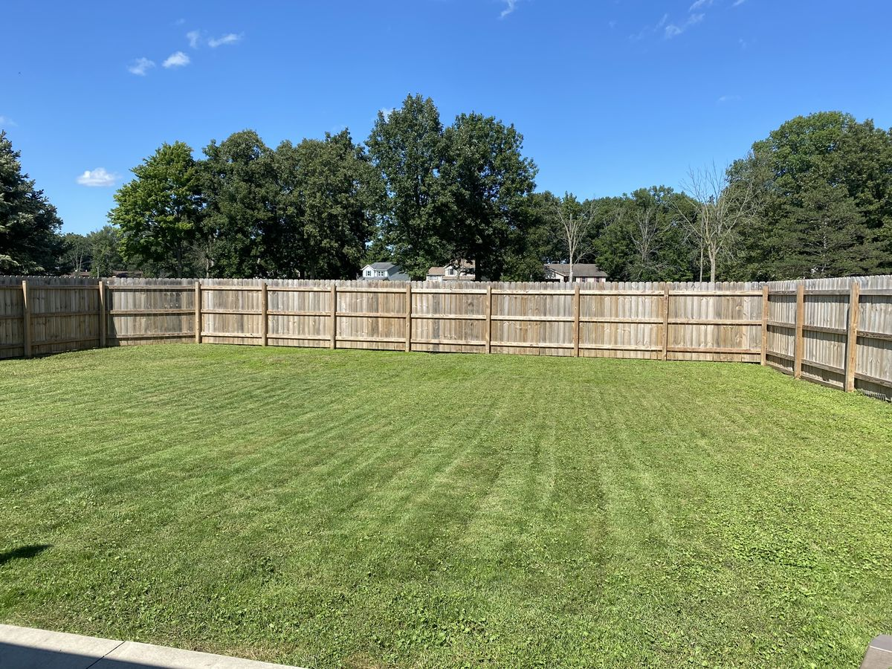
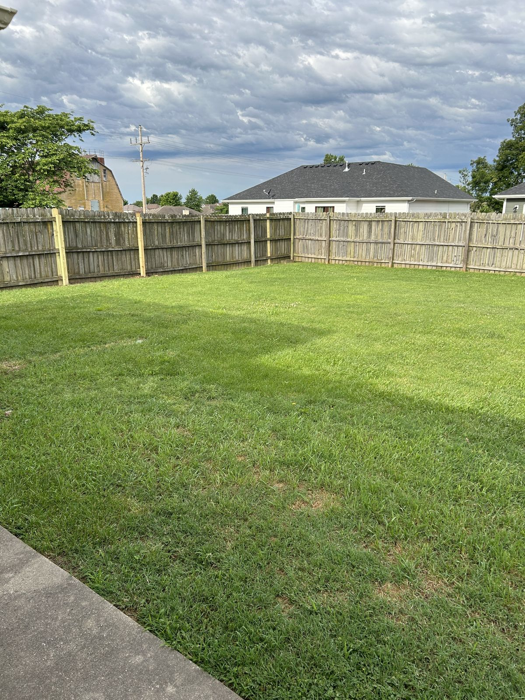

EHS Landscaping Design & Gardening Services reshapes compounds, lawns and gardens across Kilimani and beyond.
Book a site visit
A garden in Nairobi begins underground. Across Kilimani and the surrounding suburbs the ground changes from one plot to the next, and a design that ignores it will fail by the second rainy season.
Where the red soil sits, we work with its iron-rich, well-draining structure. It is easy to dig but poor at holding nutrients, so we build it up with compost and plant for steady feeding. Where black cotton clay appears, we plan for swelling and cracking: grading to move water away, and choosing deep-rooted species that hold the soil rather than fight it.
Hard surfaces, steps and retaining walls are set on compacted, drained bases. We schedule concrete work around the weather and cure it slowly under cover, so it does not crack in the dry heat or wash out in a downpour.
The result is a compound that looks composed on day one and keeps its shape in year five.

Pruning, shaping and health checks for mature trees and hedges.
Tap Before or After to switch, or drag across the photo to compare.


Ranges are indicative only. Your final quote depends on plot size, access, materials and soil conditions, and is confirmed after the site visit.